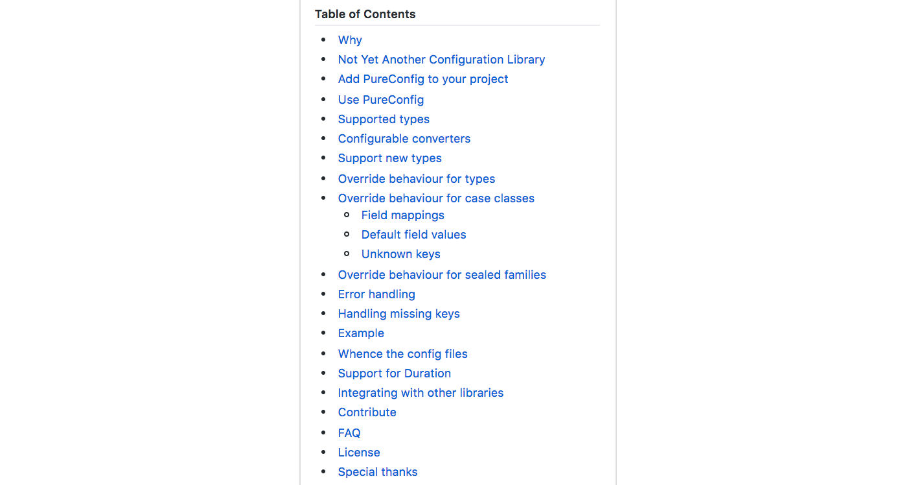

class: center, middle background-color: black .title[Defusing the Configuration Time Bomb] .author[Leif Wickland] --- background-image: url("assets/IMG_20170415_115106.jpg") .mediumBottomRight[ @leifwickland] --- .huge[What is a program?] -- .huge[Hopefully it's an algorithm.] --- .huge[Typical analogy for an algorithm?] -- .huge[A recipe] --- .huge[Common mistake following recipe?] -- .huge[Fail to ensure I have everything] --- background-image: url("assets/pesto.png") .footnote[From [foodnetwork](http://www.foodnetwork.com/recipes/food-network-kitchen/basil-pesto-recipe2-1915284)] --- .medium[ Ingedients → Steps → Yum] --- .medium[ Input → Code → Output] --- # What's Input to Our Apps? -- - User Input - State from Data Store -- - Configuration --- .medium[ Industry has improved at sanitizing user input and data stores, not config.] <img src="assets/php.png" width="40%" style="float: left; margin: 0px"> <img src="assets/mongodb.png" width="40%" style="float: right; margin: 0px"> --- background-image: url("assets/paper.png") .footnote[From [Xu, et al.](https://www.usenix.org/system/files/conference/osdi16/osdi16-xu.pdf)] --- .quote[ Configuration errors have become one of the major causes of failures in large-scale cloud and Internet systems] .footnote[From [Xu, et al.](https://www.usenix.org/system/files/conference/osdi16/osdi16-xu.pdf)] --- # Examples of config driven outages - Google App Engine down for [2.5 hours in Feb 2010](http://www.availabilitydigest.com/public_articles/0504/google_power_out.pdf) - AWS EC2 and RDS down for [days in Apr 2011](https://aws.amazon.com/message/65648/) - Microsoft Azure down for [2.5 hours in Jul 2012](http://www.datacenterdynamics.com/content-tracks/servers-storage/microsoft-misconfigured-network-device-led-to-azure-outage/68312.article) --- # 2010 Google App Engine Outage 1. Power went down 2. Backup power didn't reach some boxes 3. Ops followed procedure to reconfigure to fail over -- 4. New configuration was busted 5. Outage persisted .footnote[From [availabilitydigest](http://www.availabilitydigest.com/public_articles/0504/google_power_out.pdf)] --- # Anecdote from Rubicon Project 1. Homegrown system for managing data retention and mirroring 2. JIRA created to change retention time 3. PR sent, reviewed, and merged -- 4. Syntax error in config makes app fail 5. Reporting pipeline stops because no mirroring 6. Engineers get called on a weekend --- .quote[ Since it is hard to completely avoid configuration errors (after all, everyone makes mistakes; as do system administrators), a more practical approach is to detect such errors as early as possible in order to minimize their failure damage ] .footnote[From [Xu, et al.](https://www.usenix.org/system/files/conference/osdi16/osdi16-xu.pdf)] --- .medium[ Why isn't it enough to start the app to determine if a modified config is good?] --- # Starting the app isn't enough 1. Squid reconfigured to change log rotation 2. Squid didn't validate that config on startup -- 3. Error was exposed much later after days of execution 4. Next attempt to rotate results in Squid in a busy loop, hogging CPU for 7 hours 5. Figuring out the root cause takes days .footnote[From [bugs.squid-cache.org](http://bugs.squid-cache.org/show_bug.cgi?id=1703)] --- .medium[ Xu, et al. call this a<br> <i>latent configuration error<i>] --- background-image: url("assets/bomb.gif") .footnote[[tenor](https://tenor.com/view/mario-bobomb-gif-4520277)] --- background-image: url("assets/table1.png") .footnote[From [Xu, et al.](https://www.usenix.org/system/files/conference/osdi16/osdi16-xu.pdf)] --- background-image: url("assets/table2.png") .footnote[From [Xu, et al.](https://www.usenix.org/system/files/conference/osdi16/osdi16-xu.pdf)] --- .quote[ Latent configuration errors contribute to **75% of the high-severity issues** and take much longer to diagnose, indicating their high impact and damage.] .footnote[From [Xu, et al.](https://www.usenix.org/system/files/conference/osdi16/osdi16-xu.pdf)] --- # What would we do in an ideal world? - Validate configuration on startup - Validate more than "value is present" but also "value is usable" - Provide a utility to validate config outside of app --- .medium[ Xu, et al. pushed propriety, unpublished software.] --- .medium[ I'm going to show you open source tools.] --- .medium[ Time for only one language; you get Scala.] --- .huge[ Real code!] .medium[ [git.io/configBombCode](https://git.io/configBombCode)] --- # Motivation: Need an AwesomeClient ```scala case class AwesomeClient( apiKey: String, timeout: Long, readFrom: URL, writeTo: Path) ``` -- .medium[ Let's configure it!] --- # The config file ```properties api-key=super53kr3tk3y timeout=15000 read-from=http://best.api/ever write-to=/write/it/here ``` --- ```scala val prop = new Properties val stream = getClass.getClassLoader .getResourceAsStream("vanilla.properties") prop.load(stream) AwesomeClient( prop.getProperty("api-key"), prop.getProperty("timeout").toLong, new URL(prop.getProperty("read-from")), Paths.get(prop.getProperty("write-to")) ``` -- # What's bad? --- # Mixed app logic and config loading - Business logic drowns in string conversions - Tend to write string conversions repeatedly - Data types become hurdles we jump instead e*scala*tors which lift us --- # Config errors are reported late and badly - Exception points back at the code not config - `NumberFormatException: For input string: "sad"` - Tell me file:line of error and what was expected - No error until config is needed --- # Can't verify config is good without running app - If check is difficult, less likely to get done - Long running jobs - Apps which require a special environment --- ```scala case class VanillaConfig( apiKey: String, timeout: Long, url: URL, path: Path ) ``` --- ```scala val prop = new Properties val stream = this.getClass.getClassLoader .getResourceAsStream("vanilla.properties") prop.load(stream) VanillaConfig( prop.getProperty("api-key"), prop.getProperty("timeout").toLong, new URL(prop.getProperty("read-from")), Paths.get(prop.getProperty("write-to"))) ``` -- # What's bad? --- # What's bad? - Duplicate names between class and config - Carefully translate from<br>`kebab-case` to `camelCase` - Explicitly convert from `String` to field type - Config errors are still reported badly - `NumberFormatException: For input string: "sad"` --- .huge[ [PureConfig](https://github.com/pureconfig/pureconfig)] -- - Magically maps field names to config names - Uses field types to translate strings for you - Builds on [Typesafe Config](https://github.com/typesafehub/config) so you get [HOCON](https://github.com/typesafehub/config/blob/master/HOCON.md) - Superset of JSON + `.properties` - Merges files + env + `-Dproperties` --- ```json api-key: super53kr3tk3y timeout: 15 seconds read-from: http://best.api/ever write-to: /write/it/here ``` ```scala case class ShinyConfig( apiKey: String, timeout: FiniteDuration, readFrom: URL, writeTo: Path) ``` -- ```scala pureconfig.loadConfigOrThrow[ShinyConfig] ``` --- .medium[I lied.] -- <br> .medium[It's not magic.] - Verified at Compile-time - Well-documented - Configurable - Extensible --- background-image: url("assets/godfather.jpg") .footnote[From [memegenerator/twitter](https://pbs.twimg.com/media/DB6dwLdU0AAkhO0.jpg)] ---  .footnote[From [pureconfig](https://github.com/pureconfig/pureconfig)] --- # Configurable - Lots of different ways to load configs - Lots of different ways to map fields to config keys --- # Extensible - I need support for Hadoop's `Path`. - PureConfig doesn't include it. - So out of the box compile fails. Hooray! -- - So I have code like this: ```scala implicit val hadoopConfigConvert = ConfigConvert.fromStringTry[Path]( s => Try(new Path(s)) ) ``` --- # Defaults ```scala case class ShinierConfig( apiKey: String, timeout: FiniteDuration = 30.seconds, readFrom: URL, writeTo: Path = Paths.get("/dev/null") ) ``` --- # What could we still do better? ```scala case class ShinyConfig( apiKey: String, timeout: FiniteDuration, readFrom: URL, writeTo: Path) ``` -- - Must have a non-empty key - Timeout should be positive --- .huge[ [Refined](https://github.com/fthomas/refined)] -- .medium[ Type-level refinement of allowed values ] --- ```scala case class RefinedConfig( apiKey: String Refined NonEmpty, timeout: FiniteDuration Refined Positive, readFrom: URL, writeTo: Path ) pureconfig.loadConfigOrThrow[RefinedConfig] ``` --- # Refined lets you do ever crazier stuff like: ```scala type NonReserveredPort = Int Refined Interval.Closed[W.`1024`.T, W.`65535`.T] ``` -- ```scala type ApiKey = String Refined MatchesRegex[W.`"[a-zA-Z0-9]{36}"`.T] ``` --- ```scala final case class OpenPort() implicit val openPortValidate: Validate.Plain[Int, OpenPort] = Validate.fromPartial( new ServerSocket(_).close(), "OpenPort", OpenPort()) type AvailPort = Int Refined OpenPort ``` .footnote[[From vlovgren](https://vlovgr.github.io/refined-types/#17)] --- ```scala final case class WritableDir() implicit val writableDirValidate: Validate.Plain[Path, WritableDir] = Validate.fromPredicate( p => p.toFile.canWrite && p.toFile.isDirectory, p => s"$p is not a writable dir.", WritableDir()) type WritableD = Path Refined WritableDir ``` --- .medium[ Have we pushed this too far?<br> Refined types with side effects or reading the env are finicky] --- # Ahead-of-time config checking ```scala import pureconfig._ object VerifyConfigMain extends App { println("Loaded Config: " + loadConfigOrThrow[RefinedConfig] ) } ``` ```shell > java -cp awesome.jar:. VerifyConfigMain ``` --- # Where are we at? - Verify config at startup - Verify config values are good - Verify config is good ahead of time --- # What if you don't have Scala? - There's no magic here - Just boilerplate reduction - Get inspired - You can rebuild any of this in your language --- background-image: url("assets/LWW_8682-HDR.jpg") .medium[ @leifwickland <br> <br> <br> <br> <br> git.io/configBomb ]